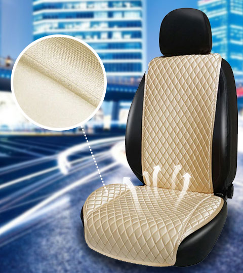

Рады представить Вашему вниманию наш новый продукт — СТЁГАННЫЕ АВТОМОБИЛЬНЫЕ НАКИДКИ НА СИДЕНЬЯ!
В комплект входит: 2 накидки на передние сиденья, крепления для монтажа.
Производятся накидки из качественных материалов: износостойкий микровелюр (под алькантару), поролон, подкладка 100% полиэстер.
Вариант сидушки: узкая (36см) и широкая (53см). Спинка шириной 33 см.
Ассортимент состоит из 10 цветов.
Выбирайте цвет, подходящий для себя и салона Вашего автомобиля!
TROKOT - это высококачественные накидки из алькантары, которые надежно сохраняют первозданный вид сидений автомобиля. Являются гарантированной защитой обивки от преждевременного износа, а также отличной альтернативой дорогостоящей перетяжке салона.
Накидки премиум-класса - идеальное решение для автомобилистов, которые хотят повысить уровень комфорта в своем авто, а также сделать его более солидным и привлекательным.
Изготовление накидок ТРОКОТ происходит исключительно на профессиональном оборудовании, с использованием материалов высокого качества, которые соответствуют Европейским стандартам.
Заводская обивка кресел сохраняется в идеальном состоянии, так как все механическое воздействие достается накидкам. Сами накидки изготавливаются из износостойкого материала с устойчивостью к истиранию в 30 000 циклов.